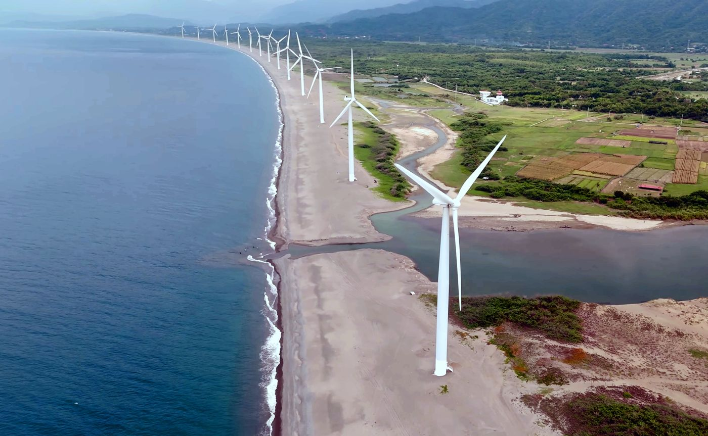
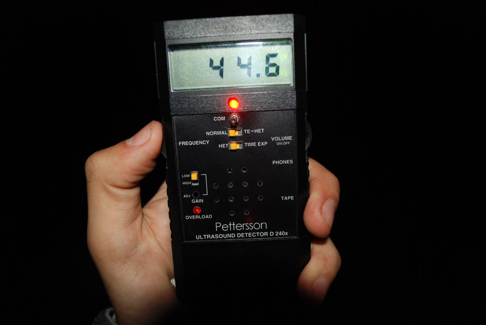

Field notes
Articles & research
What we're learning about Southeast Asia's wildlife and the tech that could help protect it. Sourced, honest about limits, and free to share.

Article · 25 Oct 2026 · 8 min
Wind is coming to Asia's bat country
What turbines do to bats, the fixes that already work elsewhere, and why Southeast Asia can't use them yet.
Read the article →
Calculator · 25 Oct 2026 · 7 min
Bats vs kilowatts
What protecting bats costs a wind farm, what the bats are worth to farmers, and why better species ID makes it cheaper. Run the numbers yourself.
Open the calculator →
Research log · updated 25 Oct 2026
Teaching a bird AI to hear Asian bats
Every test we've run, with the numbers and the failures: from 0 of 12 bats named by today's tools to 77% across 102 species, and the open problem of spotting species the model has never heard.
Read on GitHub →